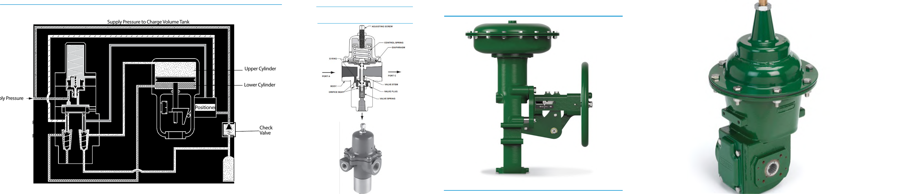

Trip Valves, Switching Valves & Handwheel Overrides

1 2 3 4- 1Trip valve — shown here already tripped; a distinct physical state once the safety system actually fires
- 2Switching valve — routes pneumatic signal for control logic, not process flow
- 3/4Handwheel override, side- (3) or top-mounted (4) — strokes the actuator by hand with no air supply at all
After Control Valve Handbook, 6th ed., Figs. 4.24, 4.25, 4.26, 4.27 — used directly, combined side by side; markers ours. Component Index: cvh-cmp-4.24, cvh-cmp-4.25, cvh-cmp-4.26, cvh-cmp-4.27.